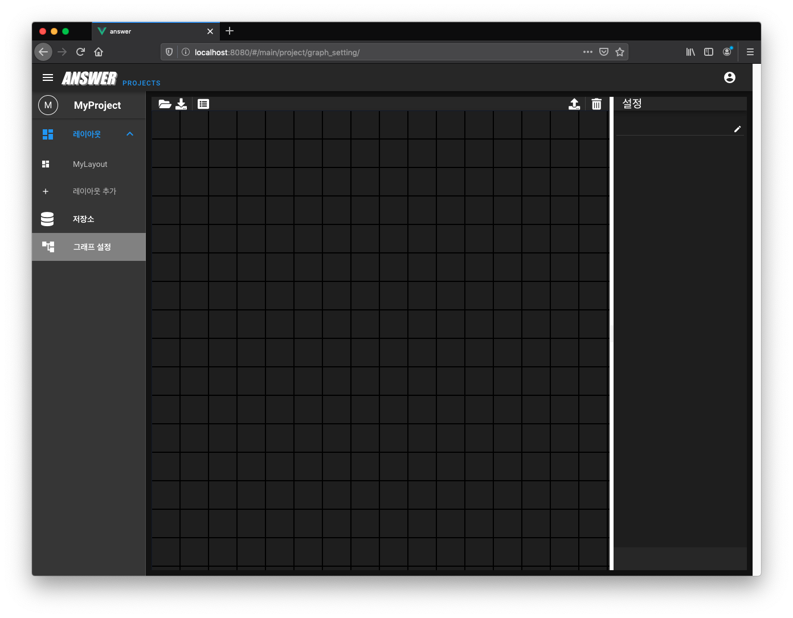
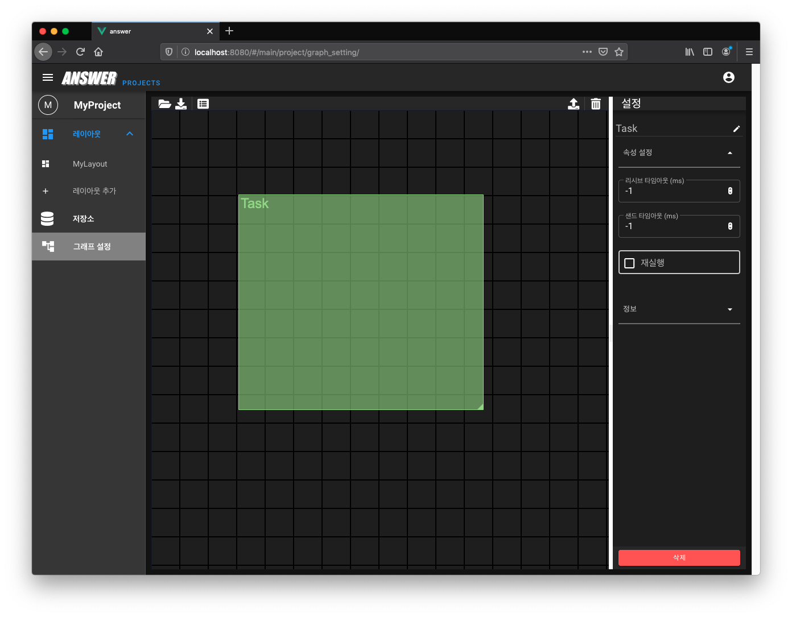
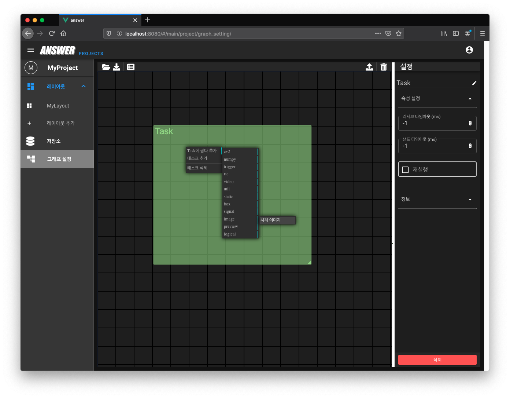
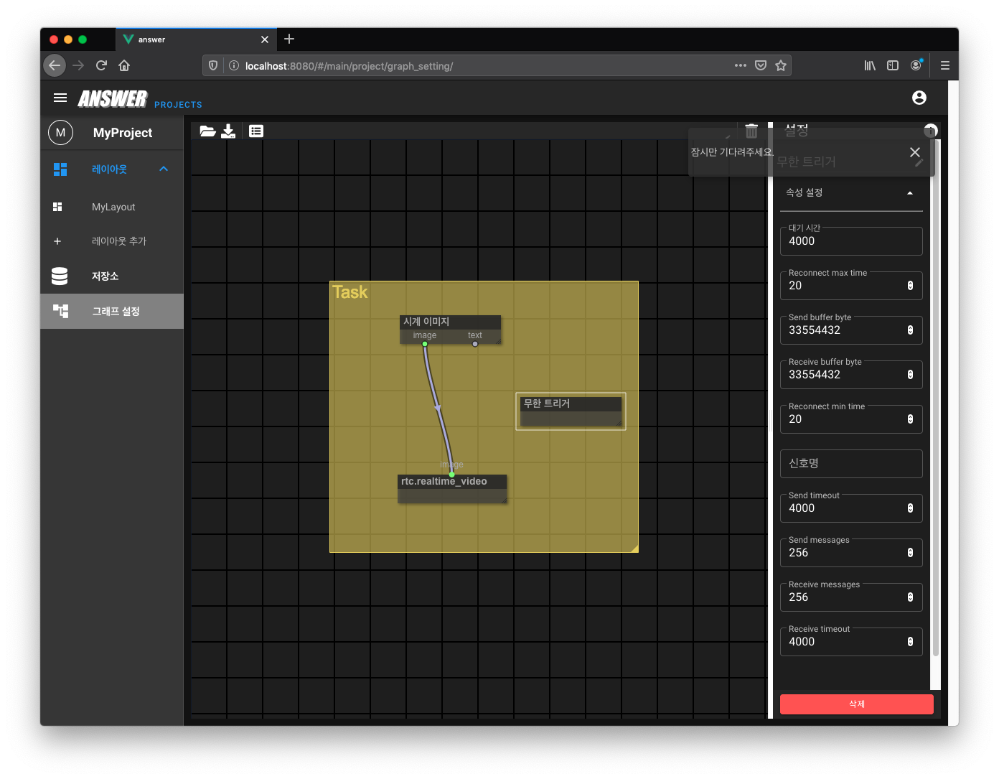
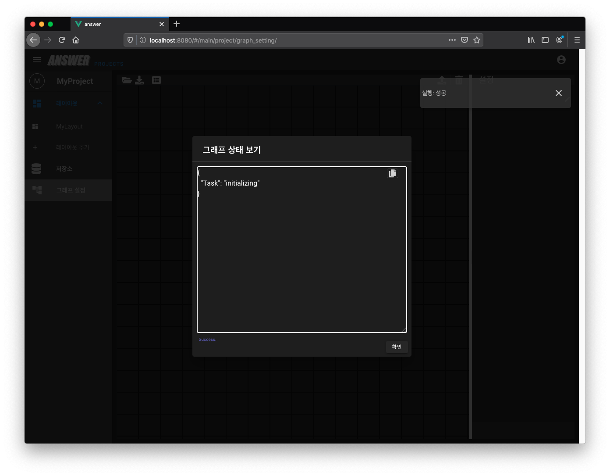
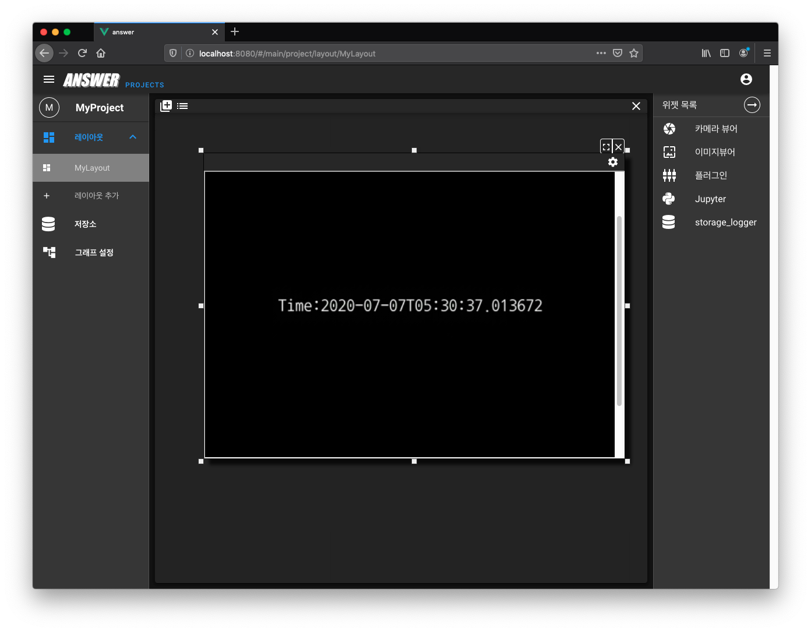

그래프¶
이 페이지는 《엔서》의 《태스크 (TASK)》를 정의할 수 있는 《그래프》에 대한 가이드를 포함합니다.
비주얼 프로그래밍¶
비주얼 프로그래밍(Visual Programming)은 사용자가 텍스트로 코딩하는 대신 그래픽적으로 프로그램 요소를 조작하여 프로그램을 개발할 수 있게 하는 방법 입니다.
《엔서》의 비주얼 프로그래밍은 프로젝트 의 하위 작업 분류인 《태스크 (TASK)》를 노드 기반 인터페이스를 사용하여 하나 이상의 그래프로 정의할 수 있습니다.
그래프 페이지에 처음 들어오면 아래와 같은 빈 화면이 출력됩니다.
빈 화면에서 마우스 우클릭으로 컨텍스트 메뉴를 출력할 수 있습니다.
《태스크 추가》 버튼으로 태스크를 생성합니다.
생성된 태스크 그룹 안에서 마우스 우클릭으로 태스크용 컨텍스트 메뉴를 출력할 수 있습니다.
현재 시간을 출력하는 데모를 진행하도록 하겠습니다. 다음과 같은 방법으로 새로운 람다를 추가합니다.
Task에 람다 추가 >> image >> 시계 이미지
참고
《시계 이미지》 람다는 현재 시간을 이미지와 텍스트로 출력해 주는 람다 입니다.
위와 동일한 방법으로 다음 람다를 생성합니다.
Task에 람다 추가 >> rtc >> rtc.realtime_video
참고
《rtc.realtime_video》 람다는 WebRTC 비디오를 출력해 줍니다.
이제 《시계 이미지》의 《image》 슬롯과 《rtc.realtime_video》의 《image》 슬롯을 연결해 줍니다. 이렇게 연결하면 《현재 시간 이미지》 를 《WebRTC 비디오》 로 출력하게 됩니다.
이제 테스크를 주기적으로 실행시킬 수 있는 《무한 트리거》 람다를 추가합니다.
Task에 람다 추가 >> trigger >> 무한 트리거
참고
《무한 트리거》 람다는 테스크에 신호를 무한정 보냅니다.
그리고 상단에 있는 《실행》 버튼을 클릭하면 설계된 그래프를 실행하게 됩니다.
실행에 성공하면 《그래프 상태 보기》 버튼을 클릭하여 태스크의 상태를 조회할 수 있습니다.
태스크의 상태는 아래와 같은 종류가 있습니다.
initializing: 초기화 중 입니다.active: 활성화 되었으며 정상적으로 실행되고 있습니다.closing: 종료 중 입니다.done: 정상적으로 완료되었 습니다.error: 비정상 종료 되었습니다.
태스크가 정상적인 상태로 활성화 될 경우 아래 화면과 같이 active 상태로 전환됩니다.
WebRTC 실시간 비디오를 시청하기 위해 대시보드의 플러그인 위젯을 열어, 다음과 같이 주소를 입력합니다.
http://localhost:8080/
경고
《rtc.realtime_video》 람다의 Port 주소를 8080 으로 지정했으며,
《엔서》를 실행한 PC와 브라우저로 접속한 PC가 동일한 경우
localhost 로 접속할 수 있습니다.
정상적으로 접속되면 다음과 같은 현재 시간 화면이 출력됩니다.
